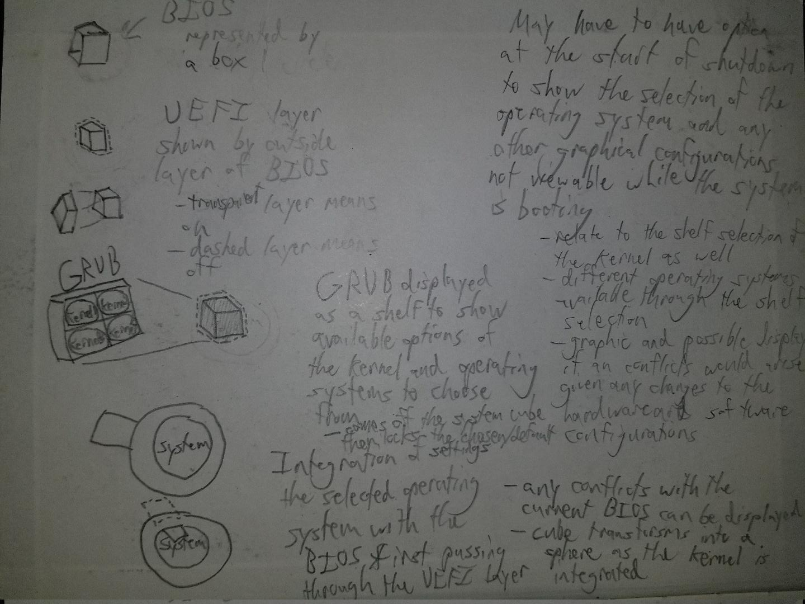
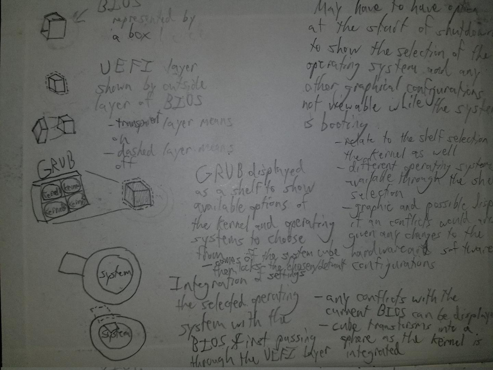
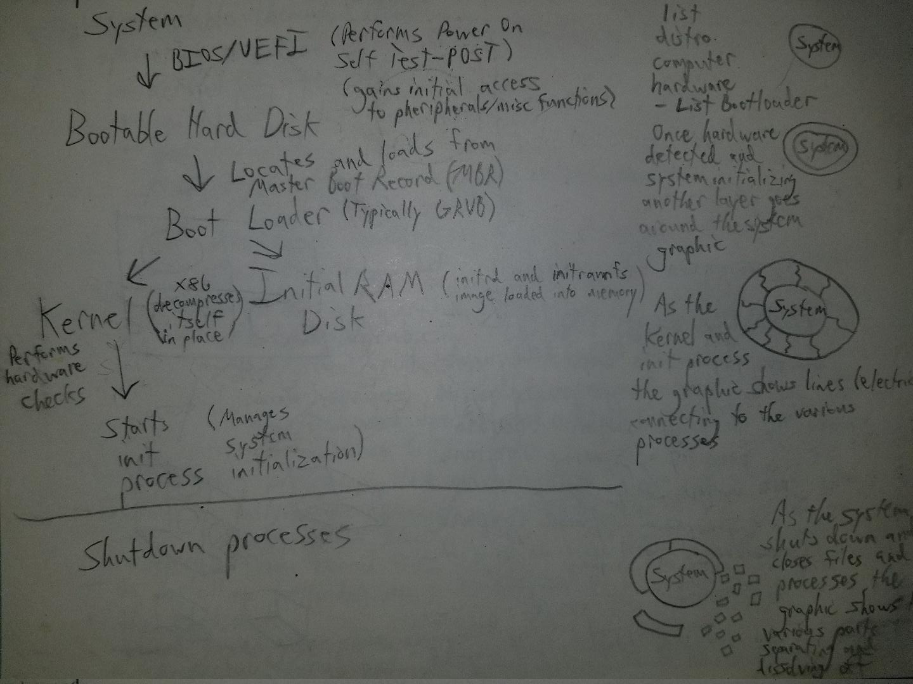

3D Linux
Below are a couple of pictures of some conceptual drawings that I have done on how to represent the Linux Operating system as it boots up. It is not comprehensive at the moment, but a work in progress.
Conceptual drawings
| BIOS and GRUB | GRUB and OS Selection | /sbin/init | Start Up and Shutdown |
|---|---|---|---|
|  |  |  |
 |
| Concept of the machine's BIOS handing over control to GRUB the bootloader. | The process of GRUB providing the options to choose from different OSs and kernels. | Key role that sbin/init has in managing the system and is the first process. | Concepts for showing the system as an object that starts up and shuts down. |